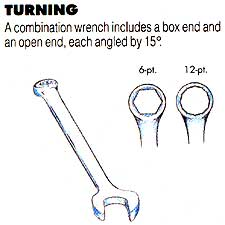
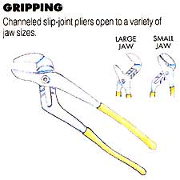
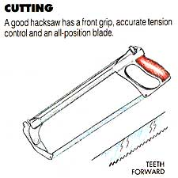
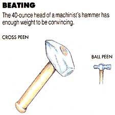

Making sense of an overwhelming selection of steel.
ONE OF MY FAVORITE CONTESTS is the one in which the winner is given five minutes, an empty cart and carte blanche to clear a store's shelves of whatever looks appealing. We all can imagine ourselves successfully sacking the grocery aisles, but how many would feel comfortable making the best choices in a hardware store?
Having a toolbox ready with the utensils of basic maintenance is as important to the car owner as mechanical know-how. The latter develops with experience; the former, by understanding each tool's function and its limits in routine repair.
Thankfully, most of us have only a car or two (and maybe some lawn and garden power equipment) to contend with. The work we'll be doing probably won't involve complicated electronics, diagnosis or even heavy mechanical repair. But it can still be a jolt to see the spread of metal that's needed to keep after just the garden-variety jobs.
The shock is eased somewhat by the fact that quality consumer-grade tools-those still old-time tough-are a sound purchase. "Bargain" brands almost never are-either they're built to sloppy tolerances, made from inferior steel or designed and finished poorly. Using them is more than an exercise in frustration; they might even be the cause of an injury, whether handled properly or not.
How do you shop for a decent product? Start with the tangibles: A good tool is solid and well balanced. It feels comfortable in your hand because it's been engineered to fit there. The finish really is finished-the forgings are clean and the rough areas machined and polished. Where rust resistance is a factor, the nickel-chrome plating is smooth and consistent.
Tools with a moving mechanism-pliers, ratchets, universal-joint connectors-should operate smoothly without binding or, to the other extreme, rocking sloppily on their pivots. A loose action is the mark of a potential "knuckle-buster" and should be shunned like the plague.
Chances are that if a tool is well made, the manufacturer will stand behind it with a lifetime warranty. Name-brand tool lines earned their reputations long ago by replacing broken pieces outright, no questions asked. That guarantee still holds in most cases, and, though it doesn't come cheaply, it's worth the satisfaction of knowing that each purchase you make should be your last.
Even in a modest tool set, you'll need representation in each of what I'll call the working categories: turning, gripping, cutting and beating. Time was, unless you had a soft spot for foreign cars, a basic set of "American" wrenches would do a pretty fair job of answering most mechanical needs. Not so today. Since the 1970s, the last holdouts of the English system of measurement-Britain, Canada and ultimately the U.S. have been converting to the metric system. Because the changeover isn't happening all at once, a new car or truck may use a combination of systems, forcing even the occasional mechanic to "tool up" with metric wrenches and sockets.
Wrenches are the heart of the mechanic's tool kit, so it's wise to understand their function completely. There are at least a dozen types of common wrenches, but of those you'll need only two or three sets to get a good start on a tool collection.
This is not the place to scrimp-vehicles depend on nuts and bolts to keep them together, and you'll have to depend on the best wrenches you can afford to take them apart. Look for tools forged from high carbon steel or from chrome-vanadium alloy that's been heat-treated, oil-quenched and tempered to impart the best balance between strength and resistance to impact. Though steel alloys containing small amounts of chromium and other elements aren't nearly as susceptible to rust as are carbon steels, wrenches will usually be plated with chrome or a more durable nickel-chrome.
For the basics, you'd need open-end and box-end wrenches ranging in size from 1/4" through 7/8"-and probably a metric collection of 6 mm to 17 mm. That alone represents over $125 worth of tools, so be glad there's such a thing as a combination wrench, which has an open configuration at one end and a closed box at the other.
Keep two things in mind when you shop: One, it's less expensive to buy wrenches in sets of seven, nine, 12 or what-have-you than to purchase them separately. Two, box wrenches come in 6- and 12-point patterns: The "hex" configuration contacts a bolt head squarely on all sides, so it's less likely to slip. Twelve-point wrenches-with their ribbed, rather than flat, inner faces-catch only the bolt's corners, but fit the head from a wide variety of angles and can slide over square nuts as well.
That ability to squeak through tight spots or sneak around obstructions is a real plus. It's also the reason why both ends of the wrench are cocked at a 15° angle; placed one way or another, the tool will probably clear most anything in its way.
Socket wrenches depend on a ratchet-drive handle for tightening and loosening. The cylindrical wrench pieces snap onto a square stud at the head of the handle, and a lever determines the working direction. A good ratchet handle usually has a quick-release button (to help remove the socket), a knurled speeder (a built-in collar that lets your fingers spin out a loosened bolt) and enough ratchet teeth to allow the handle a bite even in tight quarters. A 3/8"-drive socket set with pieces ranging from 3/8" to 1 13/16" (10 mm to 19 mm in metric) makes a good complement to the combination wrench set. A 6- or 12-point pattern of standard length (deep-length sockets are for special jobs) is your best bet.
If you're buying a kit, look for one with 3" and 6" extensions (to stretch your reach) and a universal joint connector (to "bend" it a little). Sometimes a 10" pivot bar with a rubber-seated spark-plug socket is included-and this combo will very likely come in handy.
The screwdriver may be the most maligned tool in existence, simply because there is so much no-name junk being passed off as the real McCoy. Make no mistake: A well-made screwdriver should last as long as a hammer if treated properly.
Buy only those made of chrome-vanadium steel and plated with nickel-chrome. The handle can be fluted plastic, bonded to the shaft, and perhaps covered with a rubber grip. Inspect the tips for a clean finish; better quality drivers will have a minute pattern ground into the steel to offer a better bite on the screw.
Since these tools are not expensive, you can gather a good assortment at once. Flat-bladed styles in 1/8", 3/16" and 5/16", and Phillips (cross-bladed tip) in Nos. 1, 2 and 3 will fit small, medium and large screws.A few extra dollars will buy you flat and Phillips medium-sized stubby screwdrivers (with 1'/z" shafts) for close spots, and one combination offset style (with right-angled tips) for really cramped work.
Pliers come in more shapes and sizes than you can imagine, but for basic mechanical work, stick with three types, and hold out for chrome-plated high-carbon steel and insulated handles.
The first style is an 8" long-nose (or needle-nose) pliers with a built-in side cutter and wire stripper. It'll install and remove cotter pins, do light electrical work, shape small metal objects and pluck or place things too tiny for fingers.
Your second choice should be a large pair of water-pump pliers-a jaw capacity of up to 2 1/2" and a 13" length are about right to do the crude, leverage-heavy tasks cars sometimes call for. Unlike the fixed-pivot long nose pliers, the water-pump uses a channeled slip joint, which must be precise to work throughout the range of jaw sizes it was designed to handle.
Finally, the most ingenious gripper of all-the locking pliers. My favorite is the 10" curved-jaw Vise Grip locking pliers, made by Petersen Manufacturing (now American Tool Companies). It has forged jaws and bare, stamped handles-not much to look at but unmatched for holding stubborn pipes and odd-shaped parts that won't suffer from being marred. Somehow, the folks at this Nebraska firm have managed to make a pair of homeshop locking pliers that don't pinch your fingers when the tension is released-and that alone is worth the purchase price!
Usually you'll have need for cutting tools only when you're in a bind, but that situation occurs more often than you'd like when working on well-used equipment. A hacksaw is your first line of offense. Top-dollar models have accurate tension control, a front grip and a blade mount that allows flush cutting; in addition, even mid-priced saws feature a mount that pivots to lock in four positions-up, down, right and left.
Any saw should accommodate 10" or 12" blades, normally with 18 or 24 teeth per inch to give adequate cutting contact with the work. Did you know the saw cuts only on the forward stroke? Make sure the teeth are angled to the front when the blade's installed. A flexible molybdenum alloy is the best blade material, with carbon-alloy steel a good, economical all-around choice.
If you ever got a close look at a bolt that'd been cut with a sharp chisel, you'd see that the shear line is surprisingly clean. For the kind of work you'll be faced with-chipping metal, cutting rivets, splitting stubborn nuts-only one type will do: a 1/2" or 3/4" cold chisel. It's not difficult to find good ones-they're ground from tempered chrome-vanadium steel and have a full-width bevel on each side. Include in your calculations the cost of a set of safety goggles, for no one should use a chisel without them.
Sometimes muscle power just isn't enough, and a tool such as the chisel always needs a mate to make it function. In cases like these, a 16- or 24-ounce ball peen hammer can be a useful addition to your tool kit. Hammer heads are made from drop-forged heat-treated steel, and the better ones are uniformly polished on both the face and the peen. Either hickory or fiberglass handles are fine.
If you want a heavier tool, consider a 40-ounce machinist's hammer. It's not especially good for light work but can deliver a real wallop when well placed. The end opposite the face has a cross peen rather than a ball for crimping and forming chores.
There's a lot left out of the basic tool kit I've just described, but with a little imagination, you can easily fill it in where you see fit. A small allen (hex) wrench set in standard (.050" to 9/64") and metric (1.5-mm to 4.5-mm) sizes wouldn't add a lot of cost to your collection, nor would a flat feeler gauge set (.0015" to .035" or .050 mm to. 100 mm).
How you spend your money on tools depends a lot on how you plan to use them. If you're not interested in maintaining the hardware and keeping track of the pieces, it probably won't be an investment well made. But if your goal is to slowly build upon a sound bed of purchases, your time and money will surely be well spent.
|
 |
 |
 |
|
 |
|
|